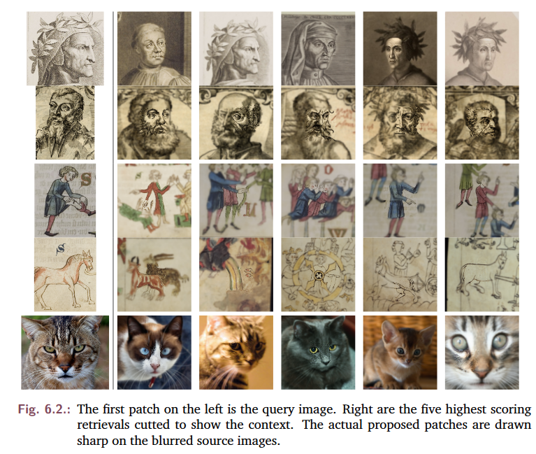

Projects
Audio-visual
ruDALL-e
Experiments with fine-tuning and sampling from ruDALL-eMaking music videos with AI
Iteratively sampling from a generative image model to generate videos conditioned on the lyrics of songs.Still in motion
A non-endless endless stream of images in motion through space and time.Music
I am learning to make amateurish music. Currently on a mission of one track per week in Bitwig (the only professional DAW running on Linux).
See here as it happens:
Web-design
While I am not a totally seasoned web-designer I have almost a decade of experience in it and also try to bring that to use in good projects that need help. The pages for these projects here where mostly bootstraped and are maintained by me:
Collegium Academicum
A student-run company in Heidelberg, Germany. We are constructing sustainable (all wood!) student and young people housing and building up a new self-organized study college.

Das Ackersyndikat
A new Germany-wide collective trying to make farming in the commons possible again. Buying land and farms and transfering them into a collective owner-structure.
Whac-a-Scholz
Trying to get hold of the chancellor to do something??
Research
2020
Problems using deep generative models for probabilistic audio source separation
published-at: I can’t believe it’s not better workshops @ NeurIPS 2020
Maurice Frank, Maximilian Ilse
[Paper] [Pre-Print] [Code] [Poster]
In invistigation into how good deep generative models behave if cmoing in contact with data not present in their trainings set. Do they know what they do not know?

2020
Unsupervised musical source separation
Maurice Frank
[Paper] [Code]
A summary and invistigation of recent methods to achieve source separation of musical data unsuspervised (meaning not to use tuples of mixed and unmixed musical examples).

2017
One-shot detection in art historical images
Maurice Frank
[Paper] [Code]
An early application of using deep feature maps to do one-shot learning, for doing sample-based image retrieval in databases of art-historic images.

Research Code
2019
NSynth-PyTorch
[Code] [Original paper]
A reimplementation of the great NSynth Autoencoder for musical notes proposed by the Magenta team. Moved to pure PyTorch.